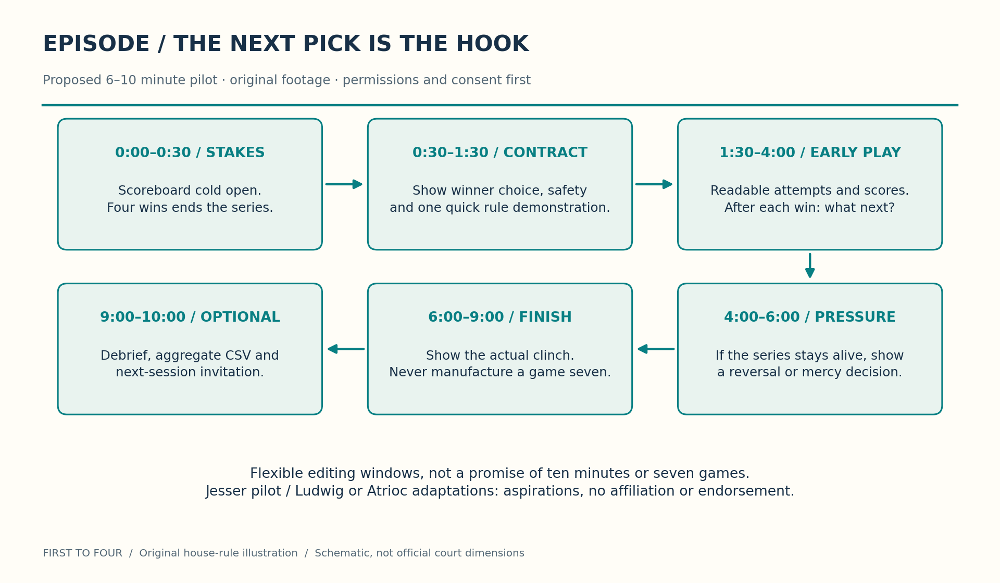

1 The format in one sentence
Every win earns a choice, but the choice does not guarantee the next win. Two players contest a best-of-seven challenge series, stopping at the first four wins. The winner chooses the next challenge from Shooting, HORSE, 1v1, Backboard, 3 Point, Rim and Bump. The actual order is decided during play; it is not a producer’s secretly fixed escalation. Establish the first picker and whether repeats are allowed before filming because the owner rules leave those details open. All observed historical starts are Shooting, not proof that they must be. The title is a dramatic premise, not a causal research finding.
The editorial question after every challenge is concrete: what does the winner choose now, and what does the other player think of that choice? Show the answer before the next game, then let the result test the player’s stated expectation. The audience can track both the series score and the next-choice holder without needing a rules lecture. Never insert an extra game after the genuine clinch.

2 Why these creator lanes are proposals, not promises
2.1 Basketball pilot: an aspirational Jesser fit
A Jesser basketball pilot is the proposed first approach because the hook can be shown with basketball action and a legible scoreboard, rather than explained as an abstract format. The creative request would be a small original-footage test, not permission to reuse an existing creator’s footage, branding, voice or audience. It does not assume availability, interest, compensation or a booking. The script below uses an original documentary sports-data style; it does not impersonate anyone’s narration, catchphrases or production identity.
2.2 Variety adaptations: aspirational Ludwig or Atrioc versions
Ludwig or Atrioc are possible future variety-format recipients, not attached talent. The transferable element is first-to-four with winner choice, not a requirement that every version use basketball. A later adaptation might combine agreed skill stations or game challenges with comparable time budgets, accessible difficulty and visible scoring. It would need its own consented rules, rights review and fresh data; basketball results do not predict another creator’s outcomes. Do not announce such a collaboration or imply their endorsement.
3 A real log supplies stakes, not manufactured odds
The supplied log covers 13 completed series from 7 August through 16 September 2026. The read-only analysis engine confirms a 12–1 series split for Liam and Owen and 50–23 challenge wins across 73 played challenges. It also verifies an 11-series current winning streak for Liam, equivalently Owen’s 11-series losing streak within this supplied history. Earlier unrecorded play is outside that claim.
The best listed 3 Point winner completion time is 1:22, or 82 seconds, by Liam on 7 September, second listed session. It is not 85 seconds, a universal record or a standardized head-to-head speed test. Some winner times are missing or pending; losing times, attempts and rebounding assistance are not standardized. Court and rim-height observations are absent for later sessions and must not be filled by carrying August’s observations forward.
3.1 Two contrasting edits from the supplied chronology
10 September, first listed session: OLLOLOL. Owen wins the opener; Liam takes the next two; Owen, Liam and Owen trade the next three; Liam wins the seventh, Bump, to finish 4–3. This is a genuine seven-game highlight, not a claim that every episode will reach a decider.
16 September, first listed session: LLLOOL. Liam goes up 3–0. Owen takes 3 Point and HORSE to close to 3–2, but Liam wins Rim to finish 4–2. Frame it as a comeback attempt stopped, not a completed comeback from 3–0. It is later than the 10 September decider, so the decider is not the latest game.
Dates identify source entries. Same-day sessions follow supplied list order, not known clock times. L and O encode the listed winners, not independently logged choices. Bump and HORSE raw “5-x” strings have unconfirmed scoring semantics; keep them as source annotations rather than animating invented points.
3.2 What an honest data overlay can say
Within-series adjacent-round records yield 60 transitions: the previous winner won the next round 35 times and lost it 25 times. The descriptive hold fraction is \(35/60\), about \(58.3\%\). It is not a forecast of the next pick’s success, and there is no justified automatic 50-percent null model when players may differ in skill. Actual picker decisions were not logged; the previous winner is only the inferred picker under the house rule.
Challenge selection is not randomized, rounds stop at the clinch, and the sample contains repeated play by the same two people. That combination creates selection and clinch-truncation bias. A next-round loss does not prove that the choice caused the loss; a hold does not prove picker advantage. Do not package these fractions as betting odds, independent observations, causal effects, statistical significance, a ranking of optimal picks or a validated prediction. The live scoreboard should say “observed in the supplied log” and show the denominator. With no justified predictive model, omit future win odds entirely.
4 Ready-to-adapt email: not sent
Subject: Pilot proposal — First to Four, where every win chooses the next challenge
Hello Jesser team,
I am proposing a compact basketball pilot: two players, one court and two balls, with a menu of seven challenges. The first player to four wins takes the series, and each challenge winner chooses the next game. The question between games is always visible: what do you pick when your opponent knows what you want?
There is already a small, owner-supplied log to explain the premise honestly: 13 completed series, including a 4–3 decider. It is source material for the story, not a promise of competitive balance or a prediction for new participants. The package includes a standalone house-rule article and original explanatory diagrams, with unresolved mechanics marked for agreement before filming.
The proposed pilot is a 6–10 minute original-footage edit with a readable scoreboard, actual on-camera choice announcements and a short post-game debrief. Filming permissions, participant consent and safe ball-to-ball-only Bump rules come first. Dinner and costume jokes are optional and never required.
Would your team be open to reviewing the format for a small test? Scope, rights, budget, scheduling and any collaboration would require a separate agreement. No endorsement or participation is assumed. Thank you for considering it.
Draft only. Add the sender’s approved signature privately; do not publish personal contact details or claim this message has been sent.
5 A roughly 90-second original opener
Read naturally, then time a rehearsal; the intervals below are proposed edit beats, not a guaranteed speaking rate. Show authentic footage from the fresh session, or label historical reconstruction clearly. Never stage a result and present it as a recorded competitive outcome.
0:00–0:20. “Winning this game gives you something dangerous: the next choice. We have seven basketball challenges, two players, and one way to end the day. First to four wins. After every challenge, the winner chooses what we play next. You can pick your strength. You can try their weakness. Neither guarantees the next point on this scoreboard.”
0:20–0:45. “The old log gives us a reason to watch, not a prediction. Thirteen series ended twelve to one. One of them still went all seven games. Another reached three-nil, then three-two, before the comeback stopped. Those are different stories. Today we are recording the choices, the attempts, and any mercies instead of guessing what happened afterward.”
0:45–1:10. “Here is the contract. We agree the first picker, repeat policy and unresolved ties before we start. Bump is ball-to-ball only on a clear court. Nobody is a target. We stop for bystanders or unsafe contact. Dinner and costume jokes are opt-in, and anyone can say no. The scoreboard tracks games won, not how much embarrassment somebody can tolerate.”
1:10–1:30. “You will see the current challenge, the series score, and who gets the next choice. When someone wins four, it ends. No bonus game to rescue the edit. So before the first shot: what do you want to play, and why do you think it helps you? Let us find out what the court says.”
6 Episode architecture: 6–10 minutes without a fake game seven

6.1 Broadcast-legible information
Keep a persistent two-name scoreboard with four empty win slots per player, the current challenge label and a next-choice indicator. Use text, shape and color together so color is not the only cue. Make attempt counters specific: five for Shooting, three for Backboard and four for Rim. In Rim, display the BALL streak separately; three consecutive BALLs charge one miss. HORSE gets letters, 1v1 gets one/two-point scores, and 3 Point gets five arc locations plus half court. Bump gets clearly explained active roles, not an invented first-to-five graphic based on an unconfirmed raw log string.
Show a compact diagram when a game first appears, then return to the action. Use a brief freeze frame to explain an airborne catch/release or HIGH JUMP RULES countback only when the relevant footage can support the explanation. Record the preceding successful shot’s attempt count; a countback cannot be truthfully recreated from a reaction shot. Mark replays and keep the real score visible.
6.2 A small, feasible production footprint
Plan one permitted court, two suitable balls and a small crew: a locked wide view for continuous action, a second operator for reactions/details, and a scorekeeper who can also monitor boundaries when that does not compromise safety. Crew size can change after a location assessment. Do not put a camera, operator or unattended phone inside a rebound or landing lane. Capture clean consented audio, slate challenge starts and announce choices before the attempt. Allow breaks, water and a genuine option to stop; production pressure never turns an unsafe jump or contact tactic into a requirement.
Obtain venue filming permission and participant releases appropriate to the planned use. Keep bystanders out of frame or obtain permission; stop if a shared court becomes occupied. No NBA footage rights, music rights, creator clips, logos or broadcast rights are assumed. Use original footage and these original diagrams, plus separately licensed assets if approved. A collaboration agreement would need to settle ownership, approvals, compensation and distribution.
7 The next session should improve the evidence
The opportunity is not to add confident graphics to missing data. It is to record a fresh session well enough that viewers can distinguish a measured event from a participant’s impression.
Choices and context: actual picker, announced choice, stated reason, first-picker method, repeats policy, court markers and measured rim height. Keep missing measurements missing, not inferred from an earlier venue.
Attempts and mercy: per-location attempts, separate BALL events, mercy offers, accepted mercies, agreed attempt allowances and countback handling. Record opt-in social bits separately; do not infer a meal obligation from mercy.
Timing: start/stop definition, completion time, attempts, assistance and interruptions. If comparing players, obtain both comparable measurements; a winner-only time is not a head-to-head speed estimate.
Privacy and publication: explicit data opt-in separate from filming permission, approved display names, limited recording access and an agreed retention/deletion plan. Review identifying footage and free-text notes before any release. Publish approved aggregate CSV from the fresh session, not raw recordings, private contacts, passwords or financial information.
Document changes to ambiguous house rules before play. If someone withdraws from a costume, interview or optional data release, do not edit that choice as a sporting failure. Collect feedback on scoreboard comprehension, pacing and the winner-choice hook after the pilot; propose success criteria in advance rather than fabricating view counts or guaranteed conversion metrics.
8 Sources, credits and the proposed next step
Rules source: the separate First to Four: The Court-Series House Rules article, transcribing the complete owner-supplied mechanics with transparent safety/consent overrides. Resolve its agreement checklist before shooting. Its jokes are not compulsory production deliverables.
Numerical source:
records/basketball/series.json, analyzed read-only bysite_content/basketball.py. The figures above are verified against that supplied 13-series snapshot, not imported from a sports database. They must be rechecked if the source changes. No inferred picker is relabeled as an actual logged decision.Diagram credits: both pitch figures are original, generated by
site_content/sports_diagrams.py. The rules and pitch use PNG assets with SVG companions; no TikZ, NBA footage or third-party creator art is required.
The proposed next step is a private format review, a resolved pre-play agreement and a consented fresh-session pilot. Only then consider approved outreach and distribution. This article sends no email, performs no outreach, uploads no recordings and auto-publishes no raw or private data. It describes a proposed campaign, not an existing partnership or a completed production.